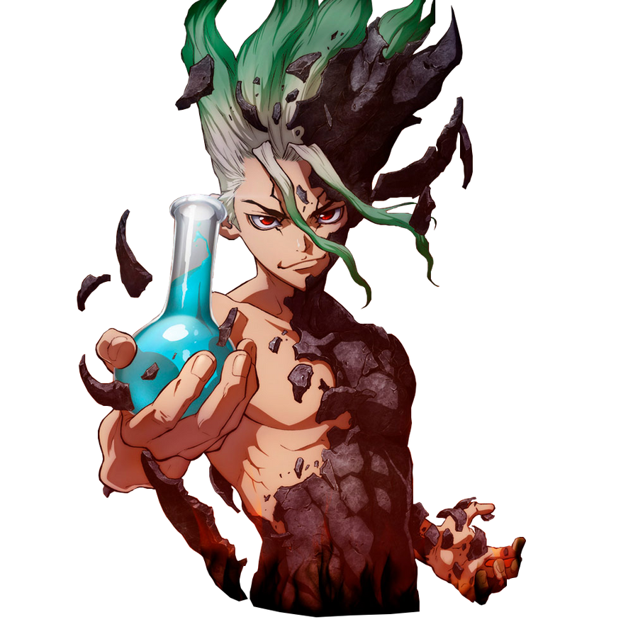
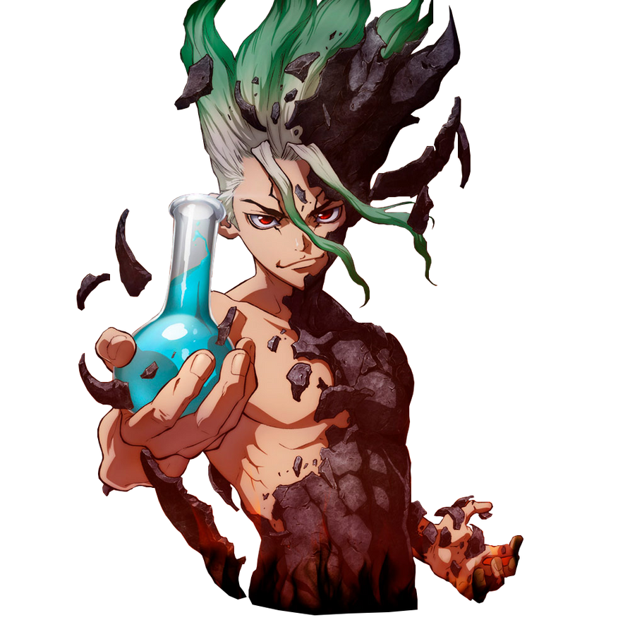
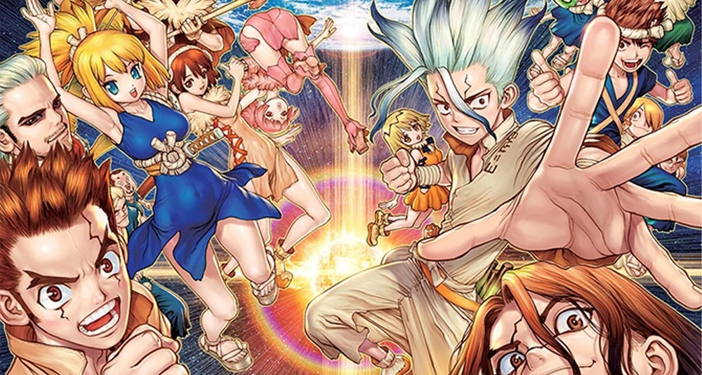
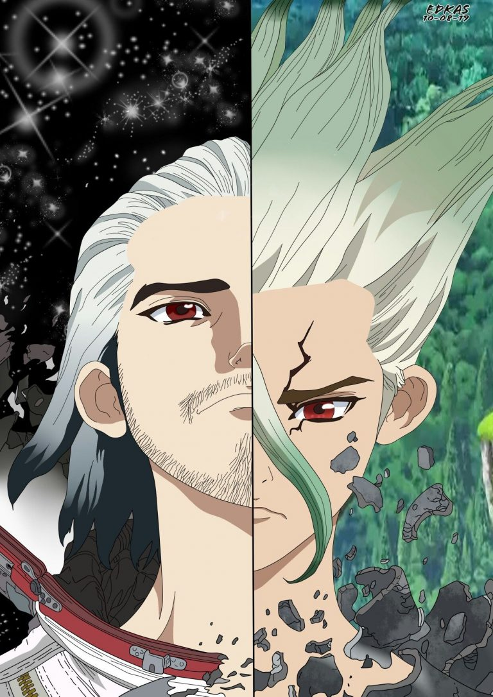
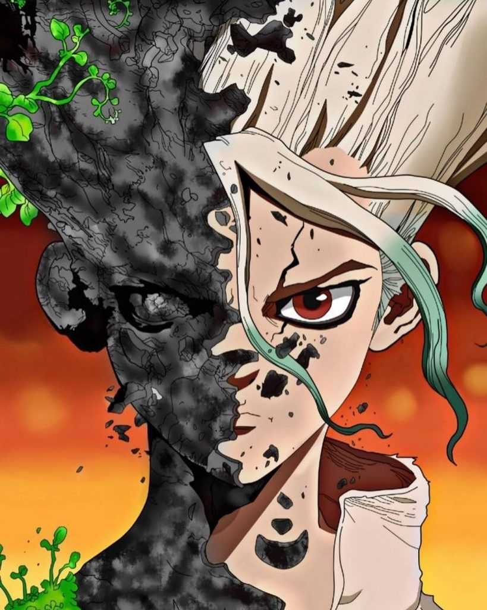
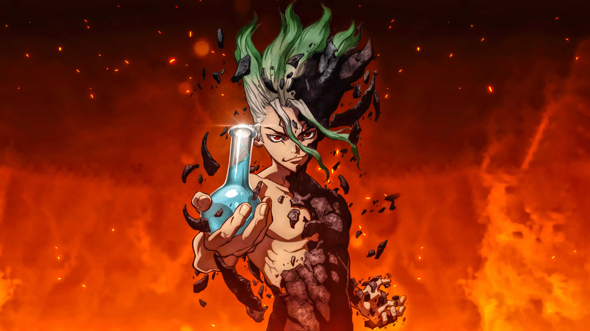
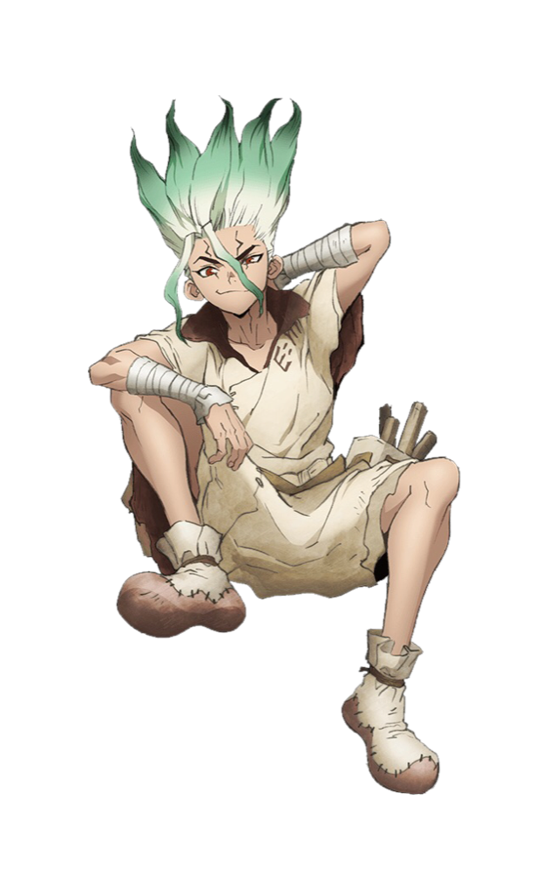

PERSONNAGES
 

Diversité des Compétences : Chaque membre de l'équipe apporte des compétences uniques. Senku est un génie scientifique, Taiju possède une force physique exceptionnelle, Yuzuriha est habile de ses mains, et d'autres personnages, comme Chrome, un jeune scientifique en herbe, et Kohaku, une guerrière habile, ajoutent encore plus de diversité. Cette combinaison de talents permet à l'équipe de surmonter divers défis et d'accomplir des tâches complexes, démontrant l'importance de la collaboration interdisciplinaire.

Évolution et Développement des Personnages : Les personnages de "Dr. Stone" évoluent de manière significative tout au long de la série. Ils grandissent non seulement en termes de compétences et de connaissances, mais aussi sur le plan émotionnel et relationnel. Par exemple, Senku apprend à apprécier davantage l'importance des relations humaines et de la coopération, tandis que des personnages comme Taiju et Yuzuriha développent une meilleure compréhension des sciences.



Synergie et Camaraderie : La dynamique de groupe et la camaraderie entre les membres de l'équipe sont profondément engageantes. Leur volonté de travailler ensemble malgré leurs différences et de surmonter les obstacles ensemble crée une forte connexion émotionnelle avec le public. Cette synergie montre comment des personnes aux horizons divers peuvent unir leurs forces pour atteindre des objectifs communs.

Exploration des Thèmes Profonds : L'équipe permet à la série d'explorer des thèmes complexes tels que la survie, l'ingéniosité humaine, et l'importance de la science dans la société. À travers leurs aventures et leurs découvertes, la série met en lumière des questions éthiques et philosophiques, comme la reconstruction d'une société idéale et la responsabilité de l'humanité envers la science et la technologie.
Innovation et Créativité : Les membres de l'équipe, guidés par Senku, utilisent leur ingéniosité pour recréer des technologies modernes à partir de ressources naturelles. Chaque innovation, qu'il s'agisse de la création de la lumière électrique ou de la fabrication de médicaments, est une aventure en soi, captivant les lecteurs et les spectateurs par la manière dont la science peut transformer le monde.
Innovation et Créativité : Les membres de l'équipe, guidés par Senku, utilisent leur ingéniosité pour recréer des technologies modernes à partir de ressources naturelles. Chaque innovation, qu'il s'agisse de la création de la lumière électrique ou de la fabrication de médicaments, est une aventure en soi, captivant les lecteurs et les spectateurs par la manière dont la science peut transformer le monde.
Innovation et Créativité : Les membres de l'équipe, guidés par Senku, utilisent leur ingéniosité pour recréer des technologies modernes à partir de ressources naturelles. Chaque innovation, qu'il s'agisse de la création de la lumière électrique ou de la fabrication de médicaments, est une aventure en soi, captivant les lecteurs et les spectateurs par la manière dont la science peut transformer le monde.